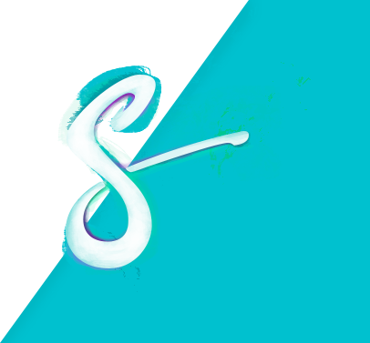

Styx
Un projet de jeu imaginé par un etudiant web designer
Une envie
Tout le monde aime les histoires
Enfant, nous avions tous cette capacité de nous créer un monde imaginaire, riche d’aventures.
Dans cet état d’esprit, j’ai voulu moi aussi à nouveau créer un monde, vous raconter une histoire, faire vivre une expérience.
Un obstacle seulement
je ne sais pas les raconter
Comment représenter et mettre en place ce monde imaginé lorsque mon crayon posé sur cette feuille blanche, refuse de reproduire correctement ce que je veux ?
Je ne suis pas un excellent illustrateur, ni un meilleur narrateur mais me voilà malgré tout face à un projet titanesque que je dois combattre et mener à bien.
Alors il me faut apprendre
Apprendre à raconter, apprendre à dessiner, apprendre à partager. Mon objectif premier est que mon imagination ne soit plus limitée par mes compétences.
Laissez-moi vous présenter Styx, l’histoire d’un projet et de son évolution à travers la narration et l’illustration.

Découvrir
le projet